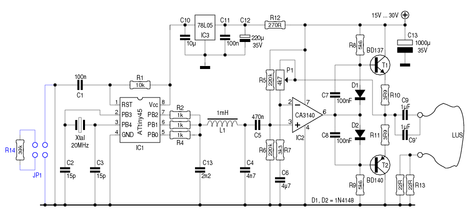

Zullen we het maar op een vlaag van verstrooidheid houden?

Om een robot-grasmaaier duidelijk te maken waar zijn grenzen
liggen, wordt een perimeter gebruikt.
Die bestaat enerzijds uit een draad die enkele centimeters onder
de grond wordt gelegd. De zender stuurt een signaal door deze
draad.
Anderzijds is de robot uitgerust met enkele sensors, die een
seintje geven als ze het signaal van de draad oppikken.
De zender moet een klokvast signaal op de perimeter-draad
zetten, dat liefst zo goed mogelijk op een sinus gelijkt.
Wie “klokvast” zegt, denkt onmiddelijk aan een kristal.
Het motto “waarom moeilijk maken, als het ook met een
AVR kan?” indachtig, hebben we hiervoor een ATtiny45
aan het werk gezet. Diens systeem-klok wordt uit een
20MHz-kristal betrokken, hetgeen een stabiele frequentie
waarborgt.

Zoals in het schema hierboven te zien is, gebruikt de 'tiny drie
uitgangen om een signaal te produceren. PB0, PB1 en PB2 worden
in deze volgorde aangestuurd:
PB2 PB1 PB0 0 0 0 0 0 1 0 1 1 1 1 1 1 1 1 0 1 1 0 0 1 0 0 0Het resultaat (zonder C13) ziet er uit zoals het plaatje links toont. C13 haalt de scherpe kantjes weg, hetgeen resulteert in iets dat al wat meer op een sinus lijkt.
Het deel, rechts van L1, vormt een eenvoudige eindversterker.
Met P1 kan het gewenste uitgangsniveau naar wens ingesteld
worden. Een oscilloscoop is bij het instellen wel handig.
Als de uitgangsspanning in de buurt van de voedingsspanning
komt, worden de toppen afgekot en lijkt het signaal helemaal
niet meer op een sinus.
/*
Sinusoscillator (of: iets dat er op lijkt) met een ATtiny45
Pros 2012
*/
#define F_CPU 20000000UL
#include <avr/io.h>
#include <avr/interrupt.h>
#include <util/delay.h>
volatile unsigned char set[8] = { 0, 1, 3, 7, 7, 3, 1, 0 };
register unsigned char bits asm("r2");
register unsigned char setcnt asm("r3");
ISR(TIM0_COMPA_vect, ISR_NAKED)
{ // Compare-interrupt
PORTB = bits; // Uitgang aanpassen
setcnt++; // Counter verhogen
setcnt &= 7; // setcnt = 0 ... 7
bits = set[setcnt]; // Klaar zetten voor volgende interrupt
reti();
}
int main(void)
{
CLKPR = (1 << CLKPCE);
CLKPR = 0; // Set max. system-clk
TCNT0 = 0;
OCR0A = 61; // 20000000 / (62 * 8) = 40000Hz
TCCR0A = _BV(WGM01); // CTC mode
TCCR0B = _BV(CS00); // Geen prescaler
TIMSK = _BV(OCIE0A);
DDRB = _BV(PB0) | _BV(PB1) | _BV(PB2); // PB0, PB1 en PB2 = uitgangen
_delay_ms(5); // Even wachten
sei(); // Enable global interrupts
while (1) {
}
}
Als we een uitgangssignaal van 40kHz willen bekomen in 8
stappen, hebben we voor elke stap iets meer dan 3μS ter
beschikking. Veel is dat niet.
Tja, “Periferiemeter” in plaats van “Perimeter”...
Zullen we het maar op een vlaag van verstrooidheid houden?
Het signaal wordt opgepikt door een standaard 10mH spoeltje.
Nu is zo'n ding niet helemaal geschikt voor deze taak - daarvoor
is de ferriet-kern te klein. Daar kunnen we een mouw aanpassen,
door er een groter stuk ferriet op te kleven. De zelfinductie
wordt daardoor wat groter: 14mH.
Teneinde de spoel weerbestendig te maken, krijgt hij een jasje
dat samengesteld is uit smeltlijm en krimpkous.
Als we Cx even wegdenken, is de L1/C1-combinatie het gevoeligst
voor een frequentie van 42.844kHz.
Dat is iets te hoog, maar op de print is plaats voorzien voor
enkele extra-condensators (Cx), waarmee we de resonantiefrequentie
dichter bij de zendfrequentie (40kHz) kunnen brengen.
T1, R1, R2, R3 en C3 vormen een simpel versterkertrapje.
De LM567 ―een toondetector― heeft geen nood aan een sterk
ingangssignaal, maar het signaal dat L1 produceert is toch wat
zwak voor een goede werking.
Het rechterdeel van het schema is een standaard-toepassing voor de LM567. Dat hoeft geen toelichting.
Wat wel toelichting behoeft, is de aanwezigheid van R8 en C4.
De LM567 bevat een oscillator. C9 en C6 kunnen niet helemaal beletten dat
er op de positieve voedingsrail sporen van die oscillator terug
te vinden zijn. Die kunnen dan ―via het versterkertrapje rond
T1― de ingang van de LM567 bereiken.
L3 en C4 vormen een effectieve blokkade voor dergelijke
stoorpulsen.
Vermits de zender met een gelijkrichterbrug is uitgevoerd, kan
hij zowel met gelijkspanning als met wisselspanning gevoed
worden. Bij voeding met gelijkspanning speelt de polariteit geen
rol - dat spreekt voor zich.
De opgegeven spanningen mogen een beetje overschreden worden,
zowel naar beneden als naar boven, maar liefst niet te veel.
De stroom, die de zender door de perimeter-draad stuurt, kan
ingesteld worden met P1. Het is evenwel niet mogelijk, met P1
de stroom tot 0mA terug te brengen.
Als blijkt dat de stroom, met P1 op zijn laagste stand, nog
steeds te groot is, kan er met de kniptang ingegrepen worden.
Tussen de beide connectors bevindt zich de tweelingweerstand
R13. Door één van die weerstanden weg te knippen, wordt de
stroom gehalveerd.
De ontvangers worden gevoed met 5V DC. De LM567 mag maximaal met 9V gevoed worden, maar dan zijn er wijzigingen nodig, wil men de uitgang van de ontvangers met een μC verbinden.
Merk op, dat de uitgang hoog is, als er geen signaal
wordt waargenomen.
De LM567 beschikt over een open-collector uitgang. Daar hoort
bijgevolg een pull-up weerstand bij. Die bestaat enerzijds uit
een LED met een serieweerstand van 560R, en anderzijds uit een
weerstand van 10k. Die tweede weerstand is een noodzaak, omdat
de spanningsval over de LED belet dat de uitgangsspanning hoger
wordt dan 3.5V.
De gevoeligheid van de oppikspoel hangt nauw samen met de stand
van die spoel t.o.v. de perimeter-draad.
Links toont de situatie waarbij de perimeter-draad in het
verlengde van de spoel ligt. Hierbij blijft de spoel redelijk
“doof” voor het signaal van de perimeter-draad.
Bij de situatie rechts is de spoel juist heel gevoelig.
Teneinde de ontvanger-printjes zo compact mogelijk te houden,
werd voor C10, de frequentiebepalende condensator, een
MLCC-type gebruikt. Dat was dom, heel dom.
MLCC's zijn eersteklas ontkoppelcondensators, maar bij deze
toepassing was het vrijwel onmogelijk een stabiele centrale
frequentie te bekomen.
Met wat kunst-en-vliegwerk is het gelukt C10 te vervangen door een MKP-type. Dat maakt een hemel van verschil!
Wanneer een oppik-spoel de zender-draad nadert, zal op zeker
ogenblik (bijvoorbeeld op 15cm afstand) de PLL van de LM567 locken. De uitgang wordt dan
laag.
Wanneer nu de afstand terug groter wordt, blijft de PLL in
gelockte toestand, ook als de afstand groter is dan de 15cm uit
ons voorbeeld. Pas bij 20cm (nog steeds een voorbeeld) houdt hij
het voor bekeken, en wordt de uitgang terug hoog.
Een vorm van hysteresis, dus. Ongewenste hysteresis, in dit
geval.
Wat, als we nu bij de zender korte onderbrekingen inlassen? De
LM567 ziet dan telkens het signaal verdwijnen. Dat gebeurt ook
wanneer de spoel zich van de lus verwijdert. Eens de afstand
groter is dan de 15cm uit ons voorbeeld, lockt de PLL niet meer
in.
Gevolg: weg hysteresis.
Voor testdoeleinden is het ideaal, dat de zender naar keuze
continue danwel intermitterend kan zenden. Maar hoe maak je die
keuze bekend aan de microcontroller, als alle I/O-pinnen bezet
zijn?
Daar bestaat een slimme truuk voor.
De RESET-pin kan immers ―met de nodige omzichtigheid― als
ingang gebruikt worden. Een 3k9-weerstand tussen RESET en GND
volstaat om aan te geven dat er intermitterend moet gezonden
worden. De bijbehorende broncode ziet u hieronder.
/*
Sinusoscillator (of: iets dat er op lijkt) met een ATtiny45
Pros 2012
*/
#define F_CPU 20000000UL
#include <avr/io.h>
#include <avr/interrupt.h>
#include <util/delay.h>
register unsigned char bits asm("r2");
register unsigned char setcnt asm("r3");
volatile unsigned char set[8] = { 0, 1, 3, 7, 7, 3, 1, 0 };
ISR(TIM0_COMPA_vect, ISR_NAKED)
{ // Compare-interrupt
PORTB = bits; // Uitgang aanpassen
setcnt++; // Counter verhogen
setcnt &= 7; // setcnt = 0 ... 7
bits = set[setcnt]; // Klaar zetten voor volgende interrupt
reti();
}
ISR(TIM1_OVF_vect, ISR_NAKED)
{
TCCR0B = 0;
_delay_us(500);
TCCR0B = _BV(CS00);
TIFR |= _BV(TOV1);
reti();
}
int main(void)
{
unsigned int adc;
CLKPR = (1 << CLKPCE);
CLKPR = 0; // Set max. system-clk
TCNT0 = 0;
OCR0A = 61; // 20000000 / (62 * 8) = 40322Hz
TCCR0A = _BV(WGM01); // CTC mode
TCCR0B = _BV(CS00); // Geen prescaler
TIMSK = _BV(OCIE0A);
// Nagaan of we continue danwel intermitterend moeten zenden
ADMUX = 0x00; // ADC0 (PB5, RESET) = ADC-ingang
ADCSRA = _BV(ADEN) | _BV(ADPS0) | _BV(ADPS1) | _BV(ADPS2);
_delay_ms(200); // Even wachten
ADCSRA |= _BV(ADSC); // Start dummy conversie
while ((ADCSRA & _BV(ADSC)) != 0) { // Wachten tot conversie voltooid is
}
_delay_ms(200);
ADCSRA |= _BV(ADSC); // Start conversie
while ((ADCSRA & _BV(ADSC)) != 0) {
}
adc = ADC;
ADCSRA = 0; // ADC uitschakelen
if (adc < 900) { // Jumper gesloten?
TCCR1 = _BV(CS10) | _BV(CS13); // CLK = F_CPU / 128
OCR1A = 255;
OCR1B = 255;
OCR1C = 255;
TIMSK |= _BV(TOIE1); // Enable overflow-interrupt
}
DDRB = _BV(PB0) | _BV(PB1) | _BV(PB2); // PB0, PB1 en PB2 = uitgangen
_delay_ms(5); // Even wachten
sei(); // Enable global interrupts
while (1) {
}
}
Het intermitterend zenden brengt een onverwacht voordeel. Zodra
de spoel dicht genoeg in de buurt van de lus is, wordt de
uitgang met korte tussenpozen laag.
Maar ... hoe korter de afstand, hoe korter de tussenpozen. Door
nu een eenvoudig R/C-laagdoorlaatfilter (10k/10μF) achter elke LM567 te
plaatsen, bekomen we telkens een analoge spanning die lager
wordt naarmate de afstand verkleint.
Dat laat on toe, op een ruwe manier die afstand in te schatten.